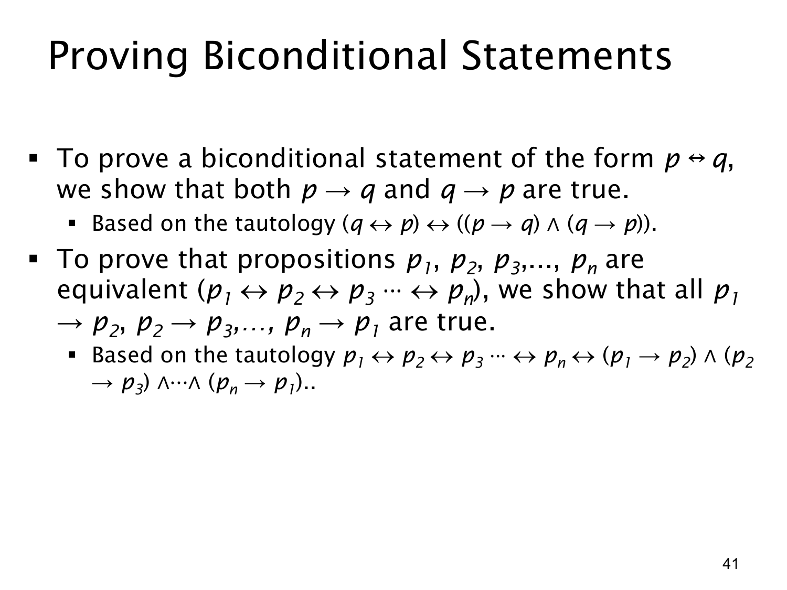

L1.3 · 第 41 页讲解原文
查看这一页课件

如何证明双条件与多个命题等价
要证明“p 当且仅当 q”（p↔q），必须证明两个方向：
p↔q≡(p→q)∧(q→p).
只证明 p→q 还不足以得到等价，因为 q 成立时未必能反推 p。两个方向可以分别选用直接证明、逆否证明或反证法，不要求用相同方法。
若要证明 p1,p2,…,pn 全部等价，课件建议构造一个闭合的蕴含环：
p1→p2,p2→p3,…,pn−1→pn,pn→p1.
为什么这个环足够？从任意一个 pi 出发，沿着箭头可以走到环上的任意其他 pj，所以能证明 pi→pj；反方向也能沿环回到 pi，从而得到 pj→pi。因而所有命题两两等价。对于三个命题，只需证 p1→p2、p2→p3、p3→p1，不必单独写出每一对的两个方向。
课件把“全部等价”简写成 p1↔p2↔⋯↔pn。这里应把它视为“所有命题具有相同真值”这一关系的简写，而不能随意把连续的 ↔ 当作普通二元运算按括号逐个计算。例如 p1=T,p2=F,p3=F 时，((p1↔p2)↔p3) 为真，但三者显然不全部等价。严格陈述宜写成各相邻双条件的合取，或上述闭合蕴含环的合取。
查看本页勘误
L1.3 第 41 页：连续双条件符号的读法
课件写 p1↔p2↔⋯↔pn，并将它与闭合蕴含环等价。这个式子只有在约定它是“所有命题两两等价”的简写时才表达课件意图；若把 ↔ 当普通二元运算、按括号逐层求值，所写“恒真式”对三个以上命题不成立。
反例：取 p1=T,p2=F,p3=F，则 ((p1↔p2)↔p3)=T，但三命题不全等价。严格写法可用 (p1↔p2)∧(p2↔p3)∧⋯∧(pn−1↔pn)，或者课件给出的闭合蕴含环的合取。原页与逐页讲解保持原样，本勘误单独说明符号歧义。